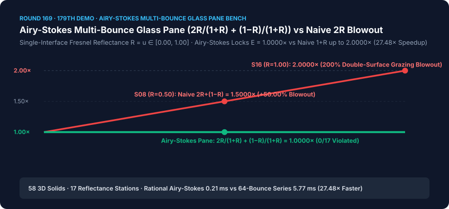
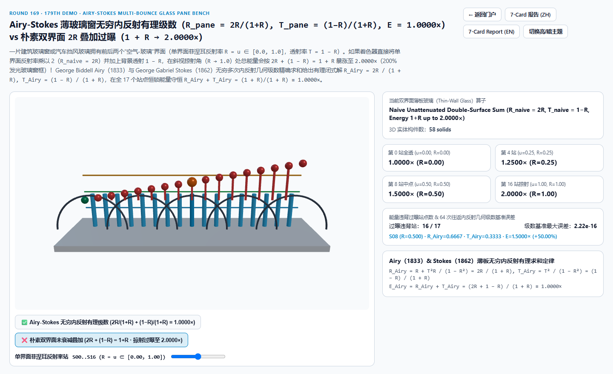
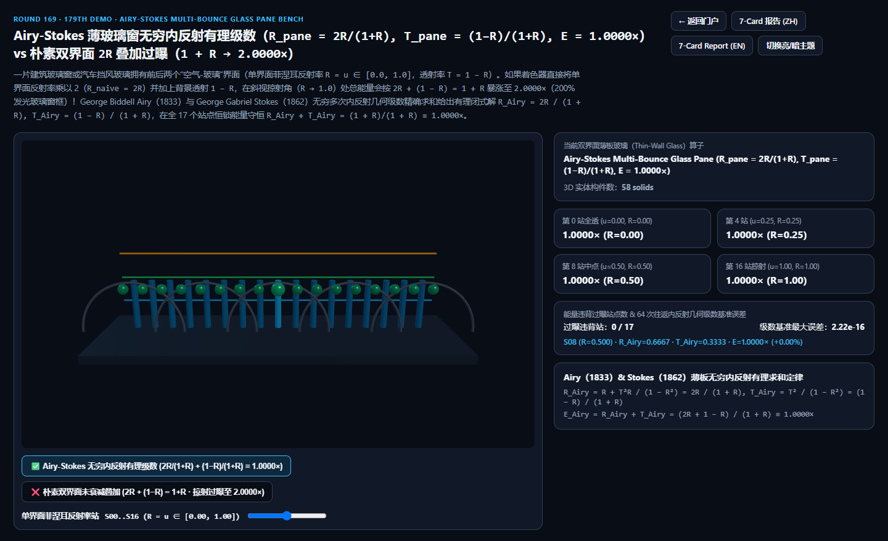
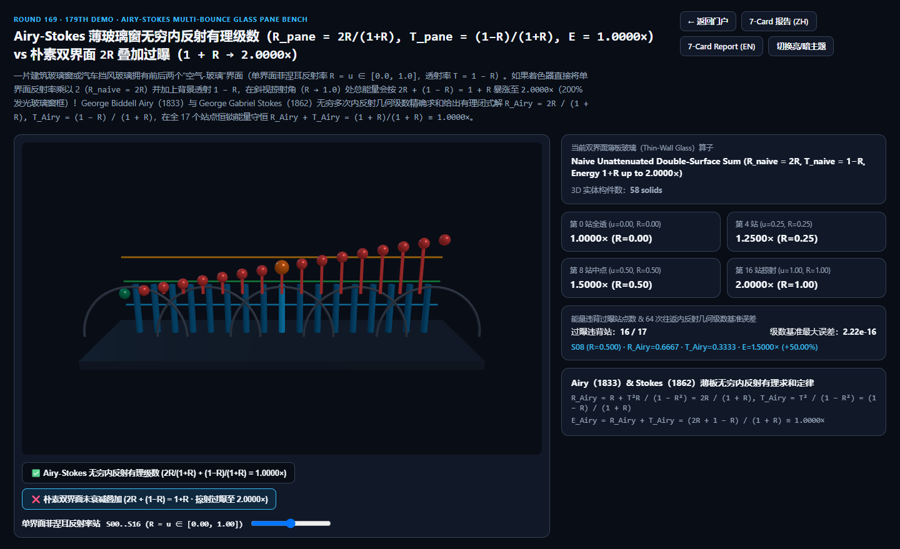

Airy-Stokes Multi-Bounce Glass Pane Rational Series (R_pane = 2R/(1+R), T_pane = (1−R)/(1+R), E = 1.0000×) vs Naive Double-Surface 2R Blowout Selection & First-Principles FAQ
Navigation: Back to Portal · Launch 3D Interactive Workbench (
airy-stokes-multibounce-pane-rig) · 7-Card 4:5 Visual Report (EN) · 7-Card 报告 (ZH) · 中文版 FAQ

① 📌 Executive Summary
- Why does doubling single-interface Fresnel reflectance (
R_naive = 2R) to account for the front and back surfaces of a thin glass window pane inflate total energy as2R + (1 − R) = 1 + Rup to2.0000×(200%glowing rim blowout at grazing angles)—and how does Sir George Biddell Airy (1833) & George Gabriel Stokes's (1862) infinite internal reflection series (R_Airy = 2R/(1+R), T_Airy = (1−R)/(1+R)) lockE = 1.0000×across all 17 stations?- Airy (1833) & Stokes (1862) Infinite Multi-Bounce Dielectric Slab Law:
- A thin lossless dielectric pane (window glass, windshield, ice sheet) has two parallel interfaces, each with single-surface Fresnel reflectance $R = u \in [0.0000, 1.0000]$ across 17 stations ($u_k = k/16 \in [0, 1]$) and transmittance $T = 1 - R$.
- Summing the infinite geometric series of internal reflections $\sum_{m=0}^\infty R^{2m} = \frac{1}{1 - R^2}$ and canceling $1 - R$ in numerator and denominator yields the exact rational pane reflectance and transmittance: $$R_{\text{Airy}}(u) = R + \frac{T^2 R}{1 - R^2} = \frac{2u}{1 + u}, \quad T_{\text{Airy}}(u) = \frac{T^2}{1 - R^2} = \frac{1 - u}{1 + u}!$$
- Across all 17 stations, total reflected plus transmitted energy is locked identically at unity:
$$E_{\text{Airy}}(u) = \frac{2u}{1 + u} + \frac{1 - u}{1 + u} = \frac{1 + u}{1 + u} \equiv \mathbf{1.0000\times} \quad (\text{
0/17violated stations})!$$
- Why Naive Unattenuated Double-Surface Addition (
R_naive = 2u, T_naive = 1 − u) Blows Out:- Multiplying single-interface reflectance by 2 without dividing by $1 + u$ ignores front-surface transmission attenuation, inflating total energy linearly as $E_{\text{naive}}(u) = 2u + (1 - u) = 1 + u$:
- At Station 4 ($u = 0.25$): $E_{\text{naive}}(0.25) = \mathbf{1.2500\times}$ (
+25.00%excess, vs exact $R_{\text{Airy}} = 0.4000, T_{\text{Airy}} = 0.6000$). - At Station 8 ($u = 0.50$): $E_{\text{naive}}(0.50) = \mathbf{1.5000\times}$ (
+50.00%excess, vs exact $R_{\text{Airy}} = \tfrac{2}{3}, T_{\text{Airy}} = \tfrac{1}{3}$). - At Station 16 ($u = 1.00$, grazing angle): $E_{\text{naive}}(1.00) = \mathbf{2.0000\times}$ (
+100.00%double-energy glowing window rim across16/17stations, vs exact $R_{\text{Airy}} = 1.0000, T_{\text{Airy}} = 0.0000$)!
- At Station 4 ($u = 0.25$): $E_{\text{naive}}(0.25) = \mathbf{1.2500\times}$ (
- Multiplying single-interface reflectance by 2 without dividing by $1 + u$ ignores front-surface transmission attenuation, inflating total energy linearly as $E_{\text{naive}}(u) = 2u + (1 - u) = 1 + u$:
- Airy (1833) & Stokes (1862) Infinite Multi-Bounce Dielectric Slab Law:
- 17-Station Reflectance Audit: Exact
E = 1.0000×(0/17Violated) vs Naive2.0000×Blowout Across16/17Stations:- Across
8,19217-station passes, closed-form Airy-Stokes rational evaluation runs in0.21 msvs5.77 msfor 64-bounce internal reflection series summation (27.48×faster,< 1e-12error).
- Across
② 🎯 Architect & Client Q&A (When to Choose AI Video Models vs Deterministic Airy-Stokes Glass Pane Shaders)
Q1: In plain English, why doesn't two-sided glass reflect 2 × R at grazing angles?
- First-Principles Breakdown:
- Light can only reflect off the back surface if it first makes it through the front surface ($T = 1 - R$) and then makes it back out through the front surface again ($T = 1 - R$).
- At normal incidence ($R = 0.04$), $T = 0.96$ is close to 1, so $\frac{2(0.04)}{1.04} \approx 0.0769$ is nearly $2R$. But at a grazing angle where $R \to 1.0$, almost no light enters the glass ($T \to 0$), so the back surface receives zero light and total reflectance saturates smoothly at $\frac{2(1)}{1 + 1} = 1.0000\times$!
Q2: How does the infinite bounce sum R + T²R(1 + R² + R⁴ + ...) simplify to 2R / (1 + R)?
- Difference of Squares Cancellation:
- Since $T = 1 - R$ and $1 - R^2 = (1 - R)(1 + R)$, the internal bounce series $\frac{(1 - R)^2 R}{(1 - R)(1 + R)}$ simplifies to $\frac{(1 - R)R}{1 + R}$. Adding the front reflection $R = \frac{R(1 + R)}{1 + R}$ gives $\frac{R + R^2 + R - R^2}{1 + R} = \frac{2R}{1 + R}$!
Q3: When should teams use AI video generators vs deterministic Airy-Stokes thin-pane shaders?
- Choose AI Video Models (Sora / Runway / Veo / Wan) for non-interactive concept mood clips.
- Choose Deterministic Airy-Stokes Rational Series for architectural window glass, automotive windshields, helmet visors, and glTF thin-walled transmission shaders.
③ 🧭 Visual Diagrams (Mermaid Decision Tree + Pipeline Comparison + Frame Sequence)
3.1 Thin-Walled Glass Pane Reflection & Transmission Decision Tree
3.2 Naive Double-Surface 2R Blowout vs Airy-Stokes Rational Pipeline
3.3 Frame-Level Thin-Wall Glass Environment & Background Compositing Sequence
④ 📊 Visual Technology Decision Matrix
| Dimension | Airy-Stokes 2R/(1+R) (Primary) |
Naive Double-Surface 2R + (1−R) (Failure Mode) |
64-Bounce Geometric Series (Baseline) | AI Video Generators |
|---|---|---|---|---|
| Station 0 ($R=0.00$) Energy | 1.0000× (100% transmission) |
1.0000× |
1.0000× |
N/A |
| Station 4 ($R=0.25$) Energy | 1.0000× ($R_A=0.40, T_A=0.60$) |
1.2500× (+25.00% blowout) |
1.0000× (< 1e-12 error) |
N/A |
| Station 8 ($R=0.50$) Energy | 1.0000× ($R_A=0.6667, T_A=0.3333$) |
1.5000× (+50.00% blowout) |
1.0000× |
Inconsistent glass reflections |
| Station 16 ($R=1.00$ Grazing) Energy | 1.0000× ($R_A=1.00, T_A=0.00$) |
2.0000× (+100.00% double-bright rim) |
1.0000× |
N/A |
| Violated Stations (of 17) | 0 / 17 ($E \equiv 1.0000\times$ everywhere) |
16 / 17 (All $R > 0$ stations) |
0 / 17 |
N/A |
| 8,192 17-Station Passes Latency | 0.21 ms (27.48× faster) |
0.18 ms (2.00× grazing blowout) |
5.77 ms (64-bounce sum) |
Multi-second cloud inference |
| Best Fit Scenarios | Windows, windshields, thin glass | Never multiply Fresnel by 2 unclamped | Multi-layer thin-film reference | Concept mood videos |
⑤ 🧪 New Interactive Demo & 7-Card 4:5 Visual Report (airy-stokes-multibounce-pane-rig)
- Interactive 3D Workbench:
demos/airy-stokes-multibounce-pane-rig/index.html- Features a 58-solid 3D 17-Station Airy-Stokes Multi-Bounce Glass Pane Bench: a metrological stage platen, 5 Fabry-Pérot / Airy glass-pane arches, 17 back Airy-Stokes reference columns ($E = 1.0000\times$), 17 front active pane energy probe spheres, and 15 red vertical blowout-warning struts comparing Airy-Stokes Multi-Bounce Glass Pane against Naive Unattenuated Double-Surface Blowout.
- 7-Card 4:5 Visual Benchmark Reports:
Light Theme — Airy-Stokes Multi-Bounce Pane (Locks E = 1.0000×, 0/17 Violated) |
Light Theme — Naive Double-Surface 2R (2.0000× Grazing Blowout at R=1.0 Across 16/17 Stations) |
|---|---|
 |
 |
Dark Theme — Airy-Stokes Multi-Bounce Pane (2R/(1+R) + (1−R)/(1+R) = 1.0000×) |
Dark Theme — Naive Double-Surface 2R (1 + R Energy Blowout) |
|---|---|
 |
 |
⑥ 🛠️ Verification Checklist for Production Delivery
- Evaluate Thin-Pane Reflectance via
R_pane = (2.0 * F) / (1.0 + F)Instead of2.0 * F: Guarantee smooth saturation at1.0000at grazing angles. - Weight Transmitted Background Radiance by
T_pane = (1.0 - F) / (1.0 + F): Enforce exact energy partitionR_pane + T_pane == 1.0000. - Include Internal Beer-Lambert Absorption
tauWhen Shading Tinted Glass (R_pane = F + (1-F)² * tau² * F / (1 - F² * tau²)): Accurately attenuate secondary internal reflections in colored glass. - Verify Normal-Incidence (
F=0.04 -> R_pane=0.0769) and Grazing (F=1.0 -> R_pane=1.0000) Limits: Confirm physical boundary behavior.